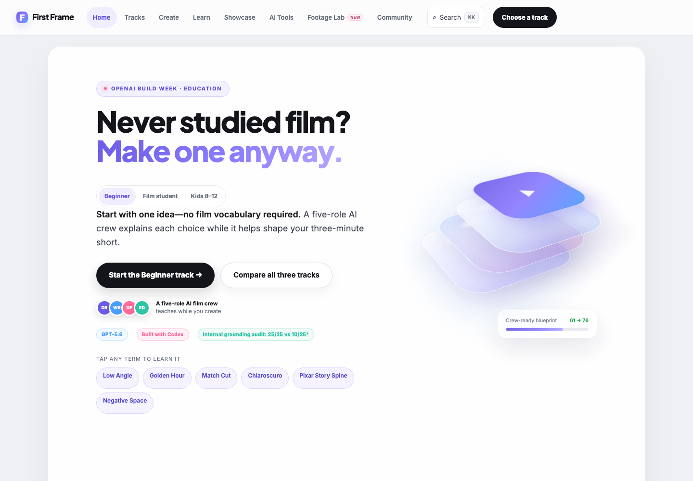

Make revision visible
The Creator’s Room returns five role perspectives—director, writer, cinematographer, editor, and audience—in one structured second-pass response. Before/after changes help a creator inspect the reasoning.
FILMMAKING PLANNING TOOL
Turn a rough film idea into a plan you can inspect, revise, and learn from.

New AI filmmakers face several decisions at once: what the story is, how shots serve it, how to maintain continuity, and which tools to use. A fluent prompt alone does not explain those choices.
A guided workflow from concept intake to a five-act blueprint, a second-pass review, shot design, and storyboard prompts. A glossary explains 111 film-craft terms. The interface includes a continuity kit and project JSON export.
The Creator’s Room returns five role perspectives—director, writer, cinematographer, editor, and audience—in one structured second-pass response. Before/after changes help a creator inspect the reasoning.
JSON schemas and server validation constrain the response shape. Citation IDs are filtered against an allowlist; that catches unknown IDs, but does not prove that advice is correct.
A deterministic offline path allows exploration without an API key. Live generation and review require a configured server endpoint and available provider model; fallback output is not a live model response.
The public code separates story generation and crew review into two API calls. Tests cover schemas, citation handling, the guided pipeline, glossary, and interface behavior. A recorded walkthrough is linked below.
Structured critique can make generated advice easier to question. The product decision was to expose revisions and vocabulary instead of asking a beginner to trust a polished first draft.
The five perspectives are role-played within a model response, not five autonomous agents. Internal planning scores are not predictions of audience response or commercial success. The small internal comparison documented in the repository is not a benchmark. This project does not claim the SceneForge award.
Compare whether beginners can explain and improve a shot plan after using the critique, rather than measuring success only by how quickly a plan appears.